Fotocopy
Hitam putih maupun warna, cepat dan rapi. Bisa antar-jemput area Jakarta.
Mulai Rp150/lembarDicetak saja di AnaGroup Printing: buku umroh, novel, BTS, spanduk, cutting sticker, paperbag, ID card, sampai fotocopy dan scan A0–A4. Pesan via WhatsApp, bisa diantar.
4.9/5 dari pelanggan
Dari buku umroh/umrah, novel, dan buku tahunan sekolah, sampai spanduk, cutting sticker, paperbag, ID card, fotocopy harian, dan print digital A3+. Kirim file, kami urus sisanya.
Hitam putih maupun warna, cepat dan rapi. Bisa antar-jemput area Jakarta.
Mulai Rp150/lembarBrosur, flyer, poster, kop surat, kartu nama, dan continuous form.
Custom ukuranCetak spanduk vinyl dan banner promosi untuk toko, event, dan kampanye. Warna cerah, finishing rapi, bisa diambil di Rawamangun atau antar ke area Jakarta.
Vinyl & large formatStiker cutting sesuai desain: logo usaha, label produk, stiker mobil, dan dekorasi. Pilih vinyl biasa atau laminasi supaya lebih tahan lama.
Die-cut customBuku Yasin, novel, agenda, pengajian, company profile, dan buku menu kulit sintetis. Softcover atau hardcover, jilid rapi.
Finishing rapiCetak novel, antologi, dan naskah pribadi dengan pilihan softcover atau hardcover. Tata letak rapi, jilid kuat, cocok untuk cetak sendiri maupun distribusi.
Softcover / hardcoverBuku doa dan panduan manasik haji & umroh: isi hitam putih atau warna, cover softcover/hardcover. Bisa cetak banyak untuk rombongan.
Panduan manasikBaca artikel cetak buku umrohBooklet promosi, katalog produk, laporan, dan panduan acara. Lipatan dan finishing bisa disesuaikan dengan kebutuhanmu.
Desain siap cetakCetak dan jilid buku tahunan sekolah: foto kelas, profil siswa, dan kenangan angkatan. Desain rapi, finishing sesuai permintaan sekolah.
Buku tahunanCetak warna ukuran A3+ tanpa plat, cepat untuk poster, presentasi, gambar teknis, dan material besar lainnya.
A3+ tanpa platKalender meja, kalender dinding, poster promosi, dan paper bag.
Siap desainPaper bag kraft dan kemasan produk untuk usaha kuliner, butik, dan hadiah. Cetak logo brand kamu dengan hasil tajam dan finishing rapi.
Kraft customCetak baju, sablon, DTF, dan full printing untuk kebutuhan komunitas atau usaha.
Sablon / DTFScan A4 sampai ukuran besar A0, A1, A2. Hasil jelas, cepat, bisa dikirim digital.
Mulai Rp250/lembarIdentitas usaha yang terlihat profesional dengan cetakan tajam dan harga bersahabat.
Bisa cetak ulangKartu identitas karyawan, kartu member, dan kartu akses dari bahan PVC. Cetak tajam, tahan lama, bisa dengan foto dan barcode.
PVC tahan lamaTidak sempat datang? Kirim file dan dokumen, kami bantu antar hasil cetakan ke kamu.
Area JakartaHarga di bawah adalah estimasi. Harga final menyesuaikan ukuran, jumlah, bahan, dan finishing — cek pastinya lewat WhatsApp ya.
mulai Rp150/lembar
mulai Rp250/lembar
konsultasi Gratis
*Estimasi mengikuti informasi yang dipublikasikan di blog DicetakSaja. Silakan konfirmasi harga terbaru sebelum order.
Tidak perlu antre dan tidak perlu ribet. Cukup chat, kami bantu dari awal sampai cetakan sampai tangan.
Ceritakan jenis cetakan, ukuran, jumlah, dan deadline kamu.
Sudah punya desain? Kirim. Belum? Kami bantu diskusikan.
Kami proses dan pastikan hasil sesuai pesanan sebelum diserahkan.
Ambil di lokasi kami atau gunakan layanan antar-jemput.
DicetakSaja adalah bagian dari AnaGroup Printing yang melayani cetak buku umroh/umrah, buku tahunan sekolah, booklet, fotocopy, jilid, digital printing A3+, dan scan dokumen di Rawamangun, Jakarta Timur. Kami percaya cetakan yang bagus tidak harus mahal atau ribet dipesannya.
42 hasil cetak asli AnaGroup Printing, dari buku umroh, BTS, booklet, jilid, sampai cutting sticker. Mau lihat hasil untuk kebutuhanmu? Kirim file dan kami bantu cek lewat WhatsApp.
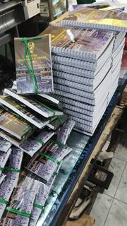
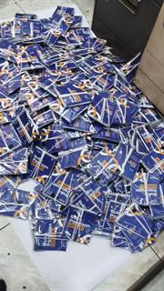
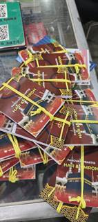
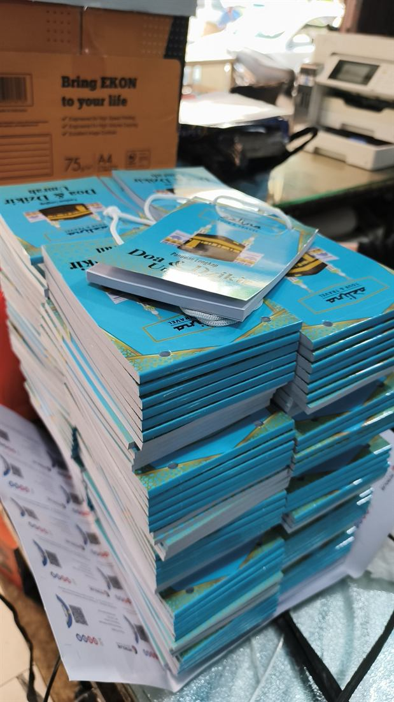
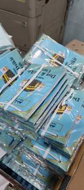
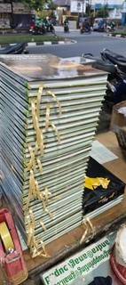
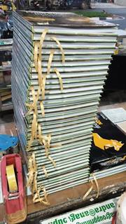
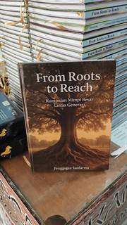
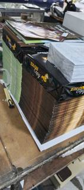
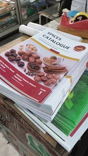
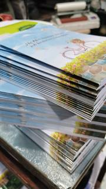
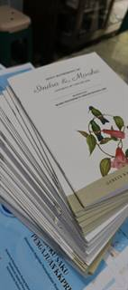
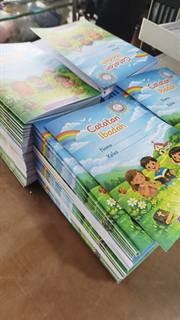
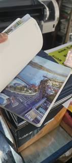
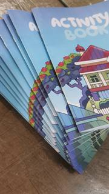
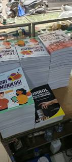
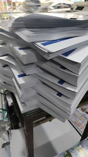
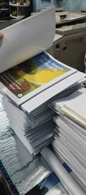
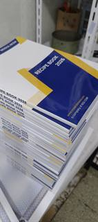
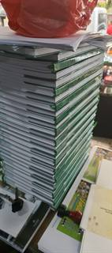
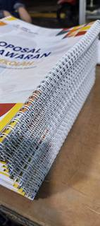
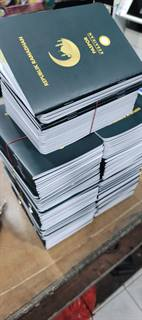
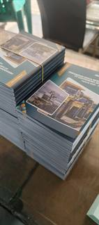
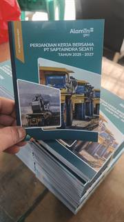
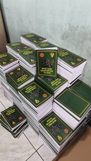
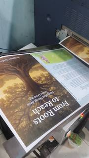
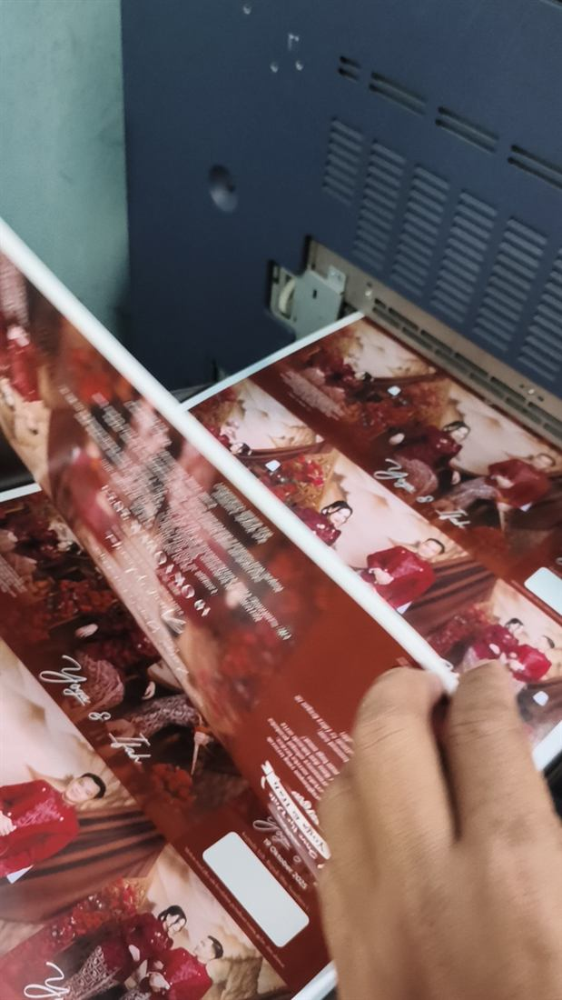
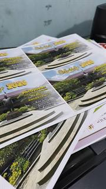
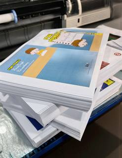
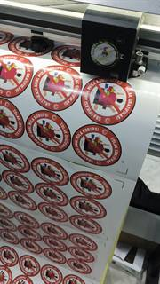
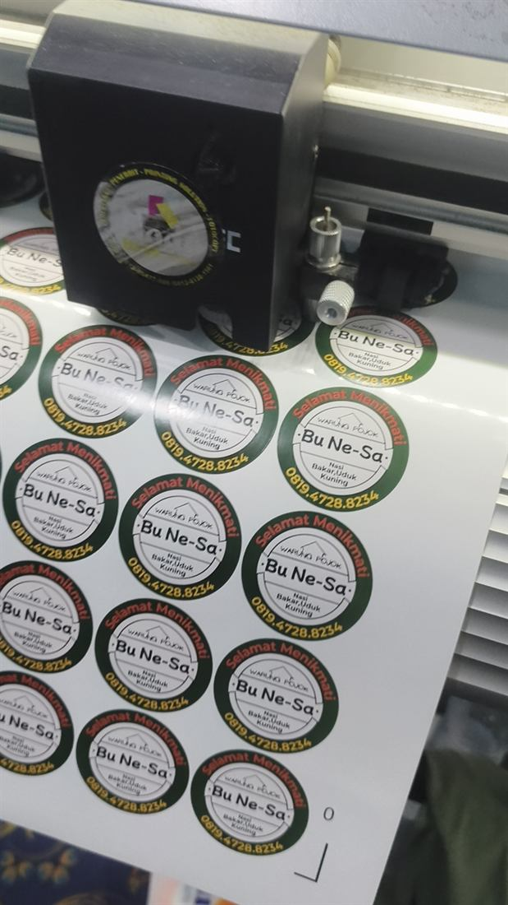
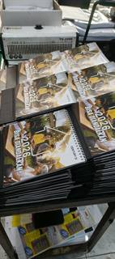
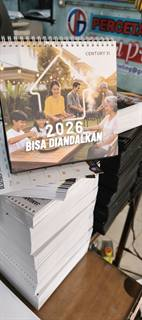
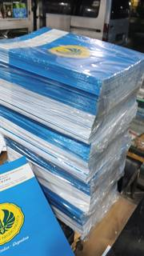
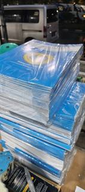
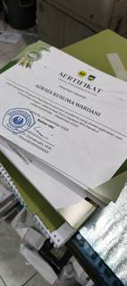
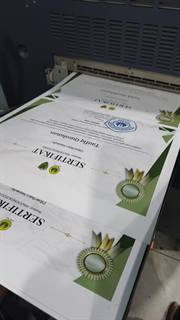
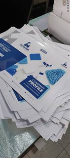
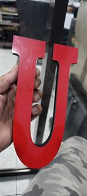
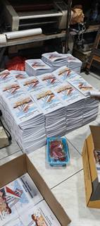
Ngomong bisa saja, tapi pengalaman pelanggan yang jadi ukuran kami.
"Tempat cetak buku terbaik, sudah beberapa kali order di Anagroup hasil sesuai dan memuaskan, pelayanan yang baik di setiap pesanan."
"Tempat percetakan yang tepat, hasil bagus dan memuaskan, sangat rekomended pokoknya."
"Pusat percetakan dan printing dengan pelayanan memuaskan. Jasa fotocopy, percetakan, dan printing oke, hasil memuaskan."
Format: inisial/nama · jenis layanan · satu kalimat pengalaman. Kirim screenshot chat atau pernyataan tertulis lewat WA, lalu kami pasang di sini dengan izin kamu.
Masih ada yang mau ditanyakan? Langsung chat WA saja, kami siap bantu.
Tanya kamiYa. Kamu bisa mengirim pertanyaan dan pesanan lewat WhatsApp kapan saja. Untuk pengambilan atau antar-jemput, detail waktu kami konfirmasi di chat ya.
Kami melayani antar-jemput di area Jakarta. Sebutkan lokasi kamu saat chat supaya kami bisa konfirmasi ketersediaan dan biayanya.
Ya. Kami melayani cetak buku umroh/umrah, buku doa, dan panduan manasik haji untuk perorangan maupun rombongan. Baca juga artikel panduan kami di blog DicetakSaja.
Bisa. Kami cetak dan jilid buku tahunan sekolah lengkap dengan foto kelas, profil siswa, dan kenangan angkatan. Finishing disesuaikan dengan permintaan sekolah.
Ya. Booklet promosi, katalog, dan laporan bisa dicetak dengan berbagai pilihan lipatan. Untuk ukuran besar, tersedia print digital A3+ tanpa plat untuk poster, presentasi, dan gambar teknis.
Ya. Kami cetak spanduk vinyl dan banner promosi untuk toko, event, dan kampanye. Ukuran bisa disesuaikan, hasil warna cerah, dan bisa diambil di Rawamangun atau dikirim ke area Jakarta.
Bisa. Kirim desain logo, label produk, atau stiker mobil kamu—kami bantu cetak cutting sticker die-cut dengan pilihan vinyl biasa atau laminasi agar lebih awet.
Ya. Kami melayani cetak buku novel, antologi, dan naskah pribadi dengan pilihan softcover atau hardcover. Tata letak dan jilid disesuaikan dengan naskah yang kamu kirim.
Ya. Paper bag kraft dengan cetak logo bisa kami siapkan untuk usaha kuliner, butik, dan hadiah. Ukuran, jumlah, dan finishing dibicarakan lewat WhatsApp.
Bisa. Kami cetak ID card PVC untuk kartu identitas karyawan, kartu member, dan kartu akses. Foto, barcode, atau data lain bisa disertakan sesuai kebutuhan.
Umumnya PDF, JPG, PNG, atau Dokumen Word. Kalau file kamu format lain, kirim saja dulu — kami bantu cek apakah bisa diproses.
Untuk fotocopy dan scan biasanya lebih cepat. Untuk cetak buku umroh, BTS, booklet, atau kaos, estimasi tergantung jumlah dan finishing. Kami sampaikan estimasinya setelah detail pesanan kamu terima.
Cara pembayaran disepakati langsung lewat WhatsApp sebelum proses cetak. Kami akan konfirmasi total harga terlebih dahulu, tanpa biaya tersembunyi.
Ceritakan kebutuhanmu — buku umroh, novel, BTS, booklet, spanduk, cutting sticker, paperbag, ID card, fotocopy, atau scan. Kami balas cepat, kasih harga yang jelas, dan bantu sampai cetakan selesai.